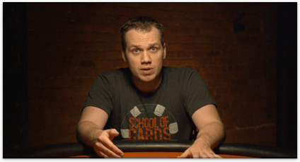
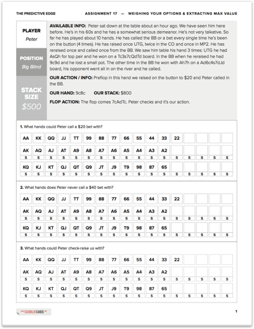
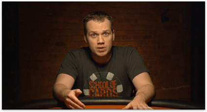
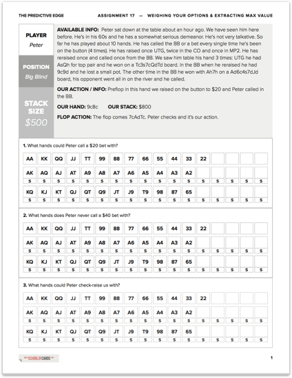

After Coaching Poker for Nearly a Decade We Have Learned Several Things About Poker Players
1. Players STUDY the Game in Very Inefficient Ways.
Most good players are decent enough to not complain about bad beats. But they always have other reasons for their lack of performance. “I am really good I just lose focus after 2 hours,” or “I play really well, I just run bad and lose and then I start playing poorly.” I hate to break it to you but. I am really good I just lose focus after 2 hours,” or “I play really well, I just run bad and lose and then I start playing poorly.” I hate to break it to you but…
2. Players Need Something to Keep Them in “Game Mode”
Most good players are decent enough to not complain about bad beats. But they always have other reasons for their lack of performance. “I am really good I just lose focus after 2 hours,” or “I play really well, I just run bad and lose and then I start playing poorly.” I hate to break it to you but. I am really good I just lose focus after 2 hours,” or “I play really well, I just run bad and lose and then I start playing poorly.” I hate to break it to you but…
3. Most poker players work on their game in small sprints, not consistently over time
Most good players are decent enough to not complain about bad beats. But they always have other reasons for their lack of performance. “I am really good I just lose focus after 2 hours,” or “I play really well, I just run bad and lose and then I start playing poorly.” I hate to break it to you but. I am really good I just lose focus after 2 hours,” or “I play really well, I just run bad and lose and then I start playing poorly.” I hate to break it to you but…
4. Most poker players have no method for actually determining if they are correct or incorrect
Most good players are decent enough to not complain about bad beats. But they always have other reasons for their lack of performance. “I am really good I just lose focus after 2 hours,” or “I play really well, I just run bad and lose and then I start playing poorly.” I hate to break it to you but. I am really good I just lose focus after 2 hours,” or “I play really well, I just run bad and lose and then I start playing poorly.” I hate to break it to you but…
5. Most poker players lack the necessary confidence to make it in this game
Most good players are decent enough to not complain about bad beats. But they always have other reasons for their lack of performance. “I am really good I just lose focus after 2 hours,” or “I play really well, I just run bad and lose and then I start playing poorly.” I hate to break it to you but. I am really good I just lose focus after 2 hours,” or “I play really well, I just run bad and lose and then I start playing poorly.” I hate to break it to you but…
6. Most poker players have no method for actually determining if they are correct or incorrect
Most good players are decent enough to not complain about bad beats. But they always have other reasons for their lack of performance. “I am really good I just lose focus after 2 hours,” or “I play really well, I just run bad and lose and then I start playing poorly.” I hate to break it to you but. I am really good I just lose focus after 2 hours,” or “I play really well, I just run bad and lose and then I start playing poorly.” I hate to break it to you but…
7. Most poker players lack the necessary confidence to make it in this game
Most good players are decent enough to not complain about bad beats. But they always have other reasons for their lack of performance. “I am really good I just lose focus after 2 hours,” or “I play really well, I just run bad and lose and then I start playing poorly.” I hate to break it to you but. I am really good I just lose focus after 2 hours,” or “I play really well, I just run bad and lose and then I start playing poorly.” I hate to break it to you but…
Because of these reasons this is exactly why we created the perfect solution to all of these problems. Introducing The 90 Day Poker Bootcamp


 
